← Documentação DDDDomain Storytelling
Jornadas de atendimento, orçamento, execução e estoque, com suas variações.
Use os diagramas abaixo para acompanhar o fluxo. Baixar arquivo Excalidraw editável
Fluxo principal
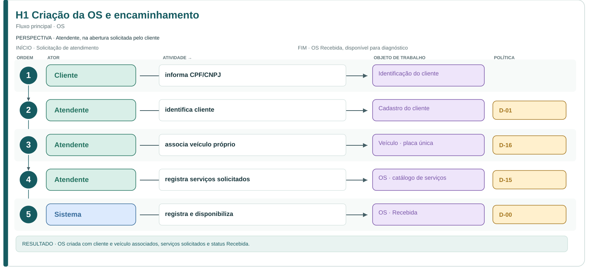
H1 Criação da OS e encaminhamento · Ampliar diagrama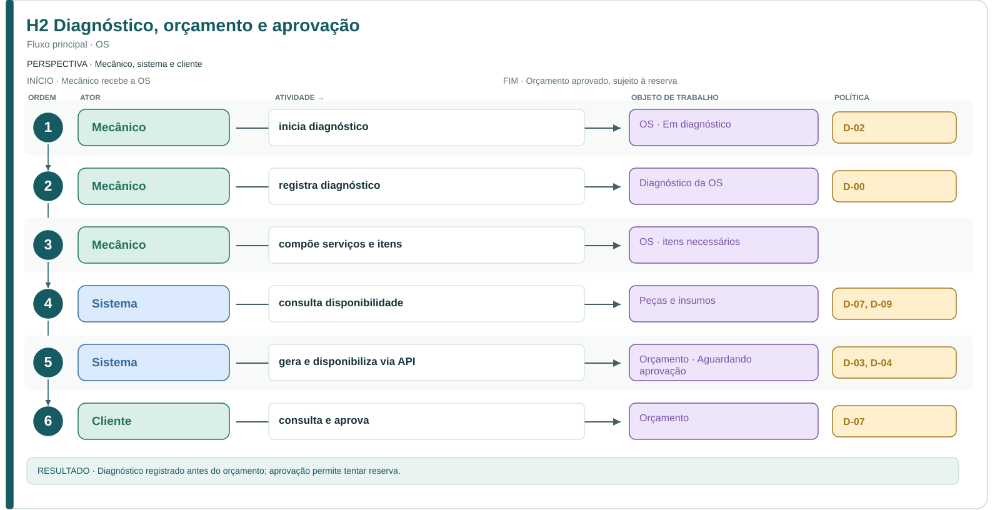
H2 Diagnóstico, orçamento e aprovação · Ampliar diagrama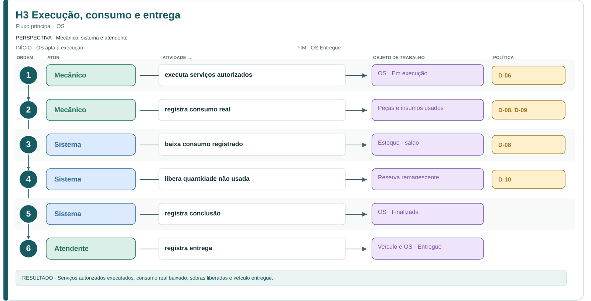
H3 Execução, consumo e entrega · Ampliar diagrama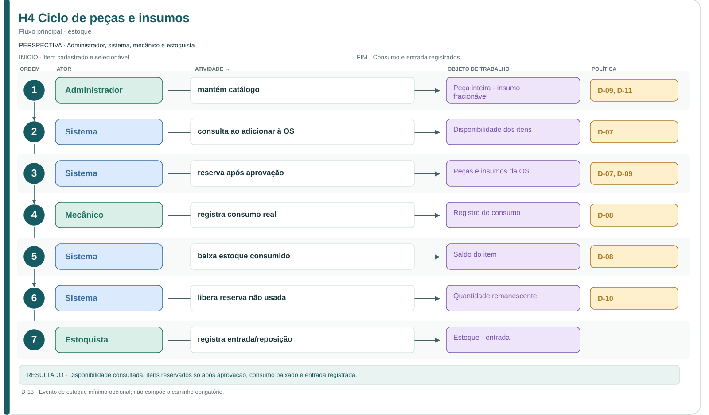
H4 Ciclo de peças e insumos · Ampliar diagrama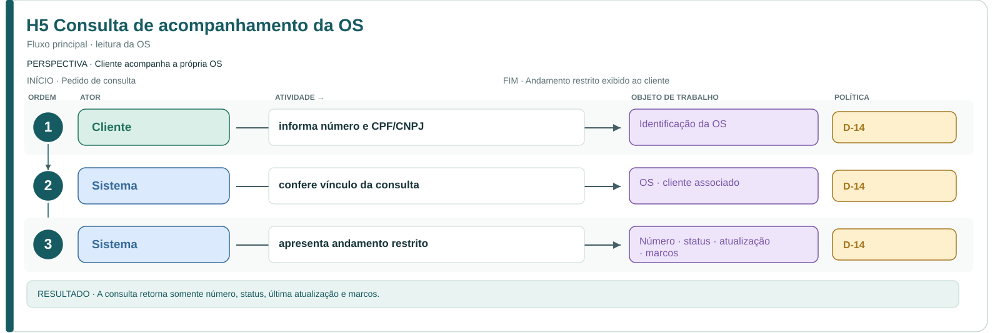
H5 Consulta de acompanhamento da OS · Ampliar diagramaVariações e exceções (10 diagramas)
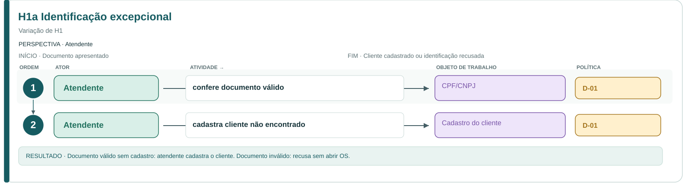
H1a Identificação excepcional · Ampliar diagrama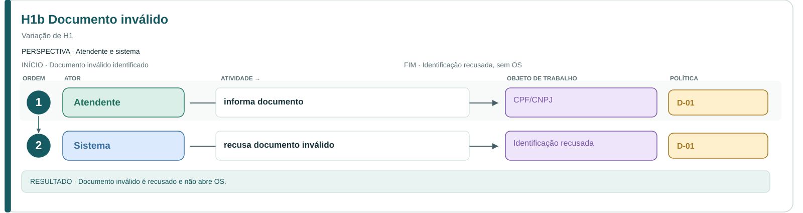
H1b Documento inválido · Ampliar diagrama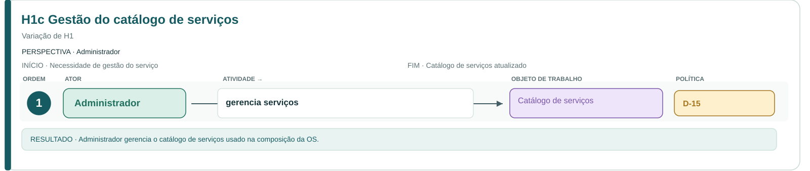
H1c Gestão do catálogo de serviços · Ampliar diagrama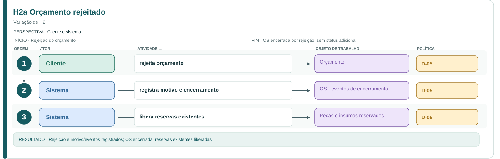
H2a Orçamento rejeitado · Ampliar diagrama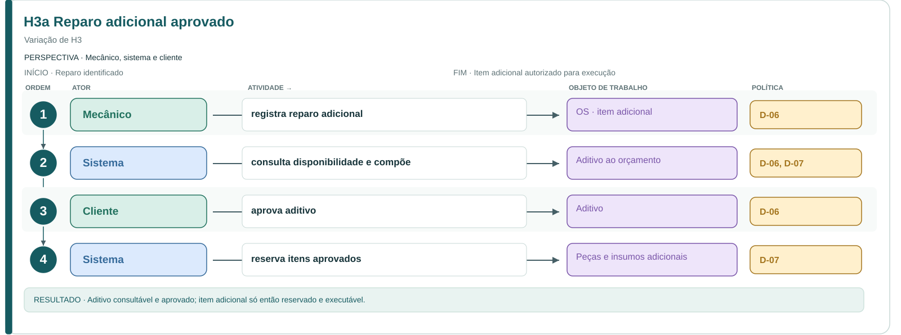
H3a Reparo adicional aprovado · Ampliar diagrama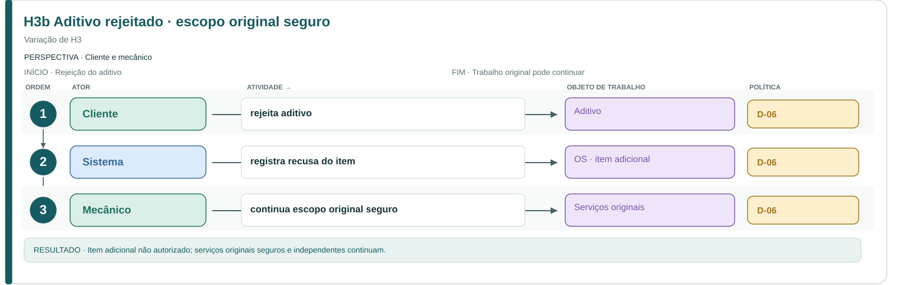
H3b Aditivo rejeitado · escopo original seguro · Ampliar diagrama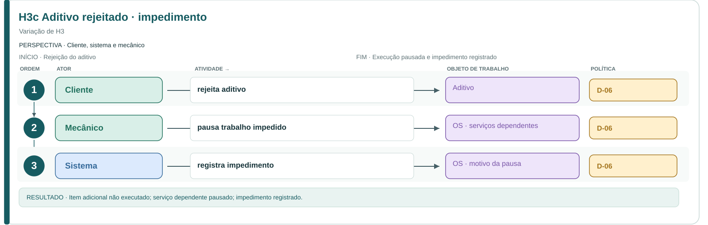
H3c Aditivo rejeitado · impedimento · Ampliar diagrama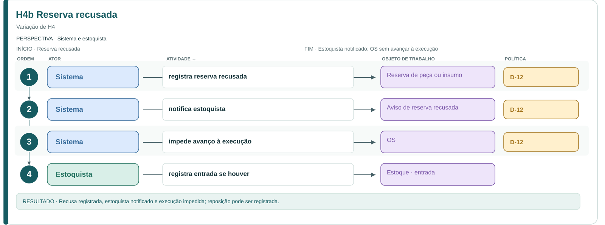
H4b Reserva recusada · Ampliar diagrama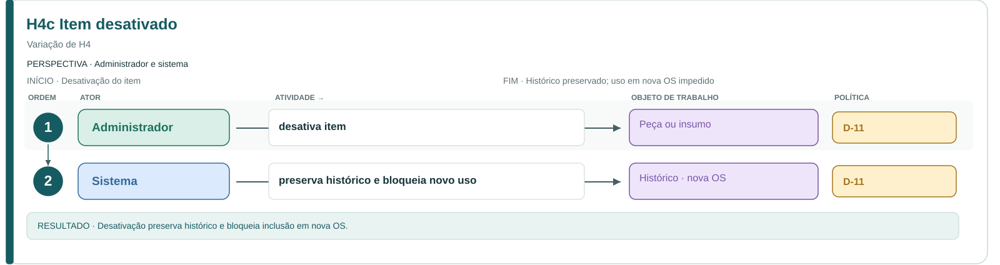
H4c Item desativado · Ampliar diagrama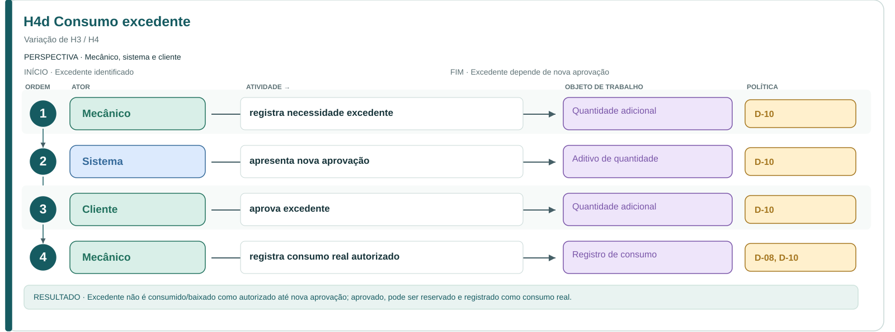
H4d Consumo excedente · Ampliar diagrama